Being (A)part of NIME: Embracing Latin American Perspectives
Abstract
Latin American (LATAM) contributions to Music Technology date back to the early 1940’s. However, as evidenced in historical analyses of NIME, the input from LATAM institutions to its proceedings is considerably low, even when the conference was recently held in Porto Alegre, Brazil. Reflecting on this visible disparity and joining efforts as a group of LATAM researchers, we conducted a workshop and distributed a survey with members of the LATAM community with the aim of sounding out their perspectives on NIME-related practices and the prospect of establishing a LATAM NIME Network. Based on our findings we provide a contemporary contextual overview of the activities happening in LATAM and the particular challenges that practitioners face emerging from their socio-political reality. We also offer LATAM perspectives on critical epistemological issues that affect the NIME community as a whole, contributing to a pluriversal view on these matters, and to the embracement of multiple realities and ways of doing things.
Author Keywords
Communities of Practice, LATAM, Decoloniality, Pluriverse
CCS Concepts
•Applied computing → Sound and music computing; Performing arts
Introduction
Rather than a well-defined territory, Latin America (LATAM) has been defined as a hybrid cultural construction and identity [1] tightly related to the Iberian colonialism process and its encounter with indigenous cultures [2], accompanied by relentless waves of migration from Europe, Africa and Asia [3]. Under hegemonic Western perspectives, LATAM is considered part of the so-called “Global South”, a term employed to encapsulate multiple countries in the globe as “disadvantaged economies” [4] in “need of assistance” [5]. In contrast, LATAM authors have defined this group of countries in the Americas as a “coexistence of cultures that both antagonise and complement each other”[6]. In the context of Sound and Music Computing, Sonic Arts and NIME, LATAM has provided fruitful contributions to this discipline since its very outset [7][8] in areas such as DMI design [9] [10] [11] [12] [13] [14] [15][16], accessible DMIs [17] [18], embodied interactions [19] [20], soma design [21] [22], and pedagogies with emergent musical technologies [23] [24] [25] [26]. Moreover, LATAM authors have contributed a unique perspective to DMI design by exploring concepts and narratives of the LATAM worldview [27] [28], and designing instruments based on the popular [29] and traditional instruments [30], technologies [31] [32], musics and dances [33] of each region, harnessing existing local approaches [34] and elements of the local cultures, offering new meanings, insights and design opportunities for NIME. However, most research published in NIME from 2001 to 2020 has been conducted in European and North American institutions (74.6%) [35] and the conference has only been hosted in LATAM once, in 2019, at Porto Alegre, Brazil, where only 18 publications out of 88 were from LATAM authors and co-authors [36]. Reflecting on these disparities, we became interested on assessing their potential underlying socio-political, socio-economic, and epistemological reasons. To this end, we formed a discussion group amongst 13 LATAM artists/researchers/practitioners with a common interest in NIME, with the underlying aim of establishing a network. As part of our joint efforts, and several months of fortnightly meetings we conducted a four-hour, free-to-attend workshop at the 18th Brazilian Symposium on Computer Music (SBCM) [37], where we sought to gather with other members of the LATAM community to further discuss steps towards consolidating the network and to share our perspectives on NIME-related practices. Additionally, we circulated a survey aimed at Latin American practitioners interested in NIME, to collect relevant data about their context of practice, as well as demographic data. Thus, in this paper we report on the findings of these two activities, which provide a snapshot of the challenges that LATAM-based practitioners face (and how they overcome them), but also the possibilities they envision for a unified LATAM NIME community. However, these LATAM voices also offer an alternative perspective on critical issues that impact the NIME community as a whole, contributing towards a more pluriversal1 [38] [39]NIME that embraces multiple realities and ways of doing things. In the following sections we present detailed findings from the survey providing insights of the demographic and geographical context of our respondents, followed by results of the workshop presented as a series of themes emerging from participants’ contributions, which is followed by our reflections and propositions for next steps for the LATAM NIME Network.
A Survey of LATAM NIME Practitioners
The survey consisted of 28 questions and was designed to collect demographic data from members of the LATAM community working in disciplines and practices related to NIME. The survey also delved upon the kind of activities these practitioners engage with, and the materials, tools and resources they use to support them, and their affiliation. We also asked people to indicate whether they have ever attended the NIME conferences or not, and whether the terms with which they define their activities are different in relation to that. The survey received 46 responses which we now report on descriptively. However, it should be noted that this sample is not fully representative of the diversity of LATAM practitioners and their activities.
Survey Results
All of our survey respondents are originally from LATAM (Image 1), and the majority are from Brazil (32.61%), are in between 25 and 44 years of age (82.6%), and identify as male (87%). Furthermore, 73.91% of respondents currently live in LATAM (Image 2).

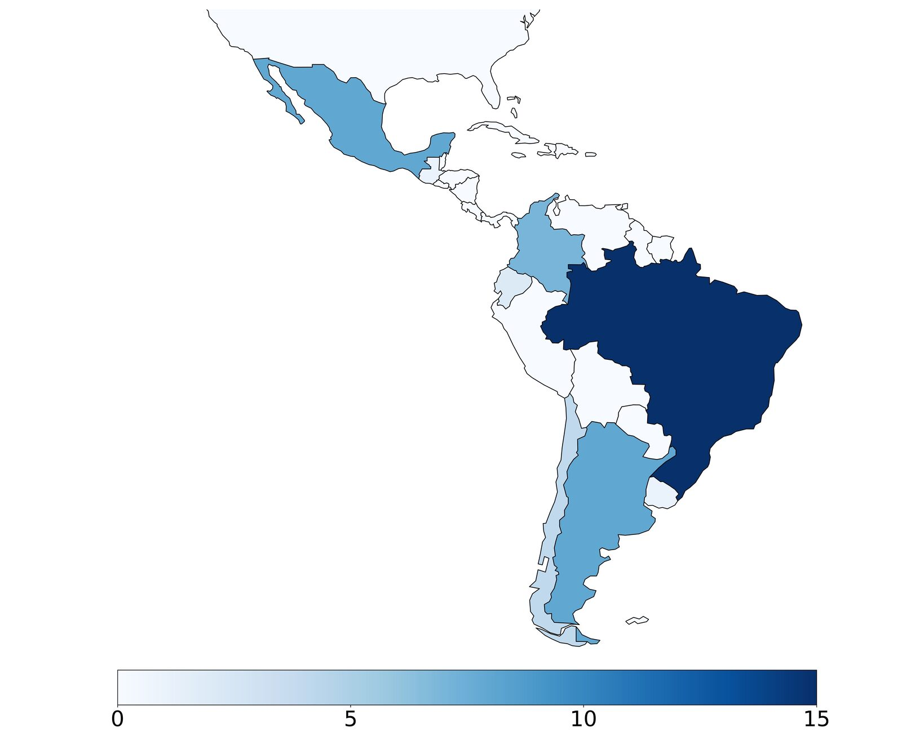
Number of participants per country of origin

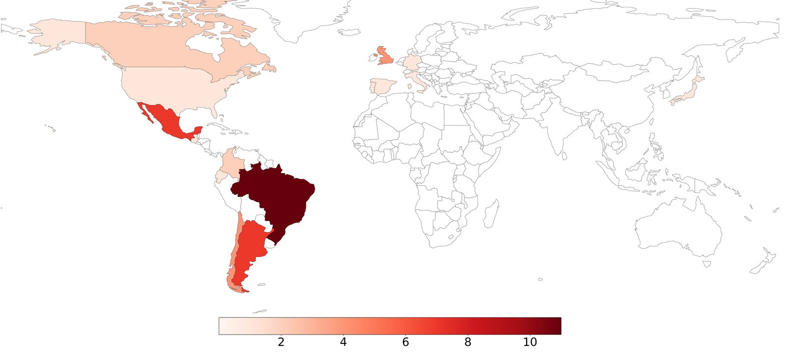
Number of participants per country of residence
Furthermore, most respondents are affiliated to an academic institution (Image 3) and mainly work doing research, although many have multiple affiliations and engage in a variety of different activities (Image 4).

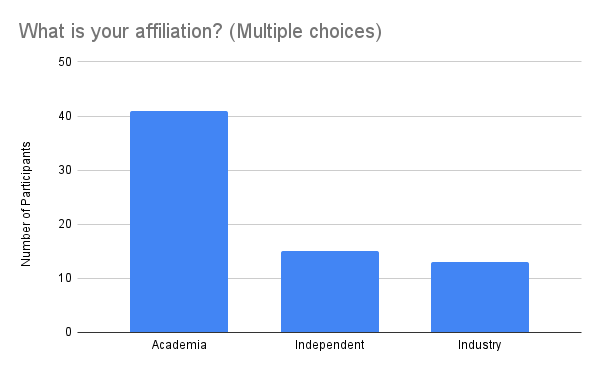
Affiliation.

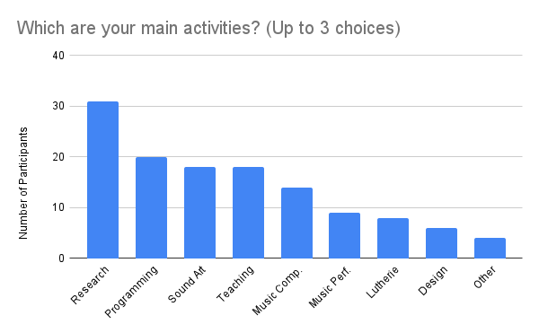
Main activities.
Most of the respondents present their work at conferences (Image 5), though 45.7% have not ever attended NIME, and the main reason for not being able to showcase their work at this kind of events is predominantly financial (Image 6).

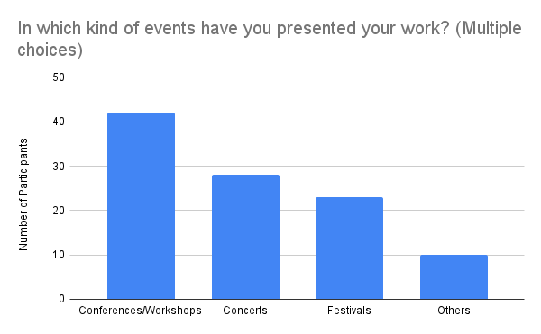
Kinds of events where work is presented.

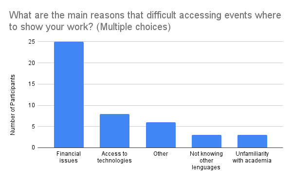
Reasons for not being able to showcase work at events.
We also note that respondents use different terminology to define their practices based on whether participants have attended NIME or not, with terms like ‘instrument’, ‘digital’ and ‘electronics’ being more salient in the former case (Image 7), and ‘improvisation’, ‘research’ and ‘sonic art’ in the latter (Image 8).

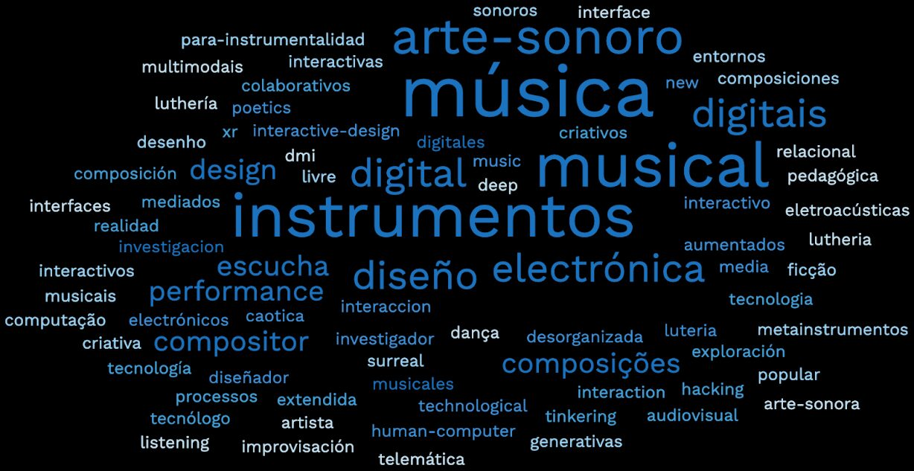
“How do you define your practice?” by NIME attendants.

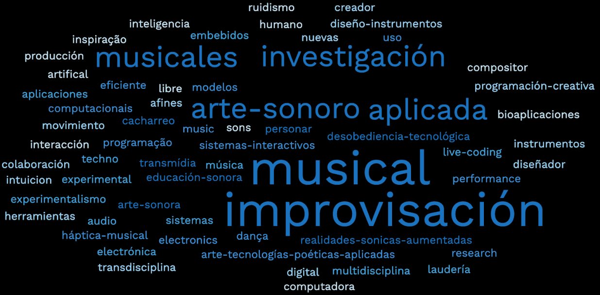
“How do you define your practice?” By Non-NIME attendants.
Regarding the use of resources, it appears most respondents employ software (e.g., Pure Data and Max/MSP) and hardware (e.g., Arduino and Raspberry Pi) in their practices (Image 9), but many also use intervened devices and recycled materials (Image 10).

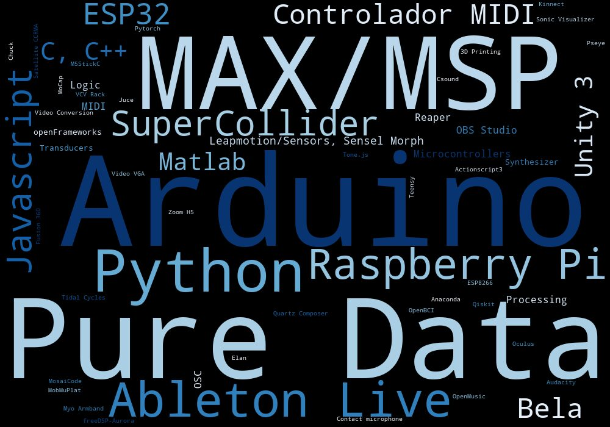
Resources used in their practices.

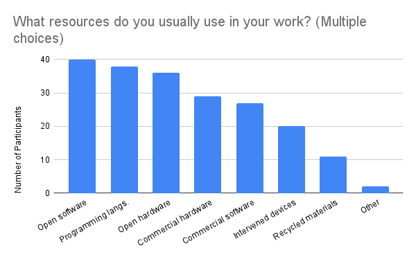
Type of resources used.
Towards a LATAM NIME Network Workshop
Following a sprint of online advertisement, the workshop received 51 sign-ups, and it had 28 participants from 8 countries (Table 1), with the majority of participants being from Argentina (8), Brazil (6) and Mexico (6). Among participants were lecturers, researchers, students, artists and members of the industry.
Breakout Room 1 | Breakout Room 2 | Breakout Room 3 | |||
|---|---|---|---|---|---|
Participant | Country | Participant | Country | Participant | Country |
P1.1 | Brazil | P1.2 | Brazil | P1.3 | Uruguay |
P2.1 | Chile | P2.2 | Argentina | P2.3 | Mexico |
P3.1 | Mexico | P3.2 | Colombia | P3.3 | Argentina |
P4.1 | Guatemala | P4.2 | Mexico | P4.3 | Peru |
P5.1 | Argentina | P5.2 | Colombia | P5.3 | Brazil |
P6.1 | Mexico | P6.2 | Brazil | P6.3 | Colombia |
P7.1 | Argentina | P7.2 | Argentina | P7.3 | Argentina |
P8.1 | Argentina | P8.2 | Brazil | P8.3 | Mexico |
P9.1 | Mexico | P9.2 | Argentina | P9.3 | Chile |
P10.2 | Brazil | ||||
During the workshop, a series of topics aimed at short and long-term actions were discussed (e.g., sharing resources and knowledge, organising mentorship programs and local NIME chapters and hubs in LATAM). Likewise, broader questions were addressed (such as decolonising NIME research from a LATAM perspective). These topics were discussed in 3 Zoom breakout rooms with participants from LATAM, who were encouraged to share their ideas using a Miro board (Image 11). Participants were also encouraged to speak in their native language, as organisers offered to translate between English, Portuguese and Spanish. Verbal responses from participants during the workshop were recorded, selectively transcribed and translated. These were then analytically coded [40] into themes along with the annotations made on the Miro board.

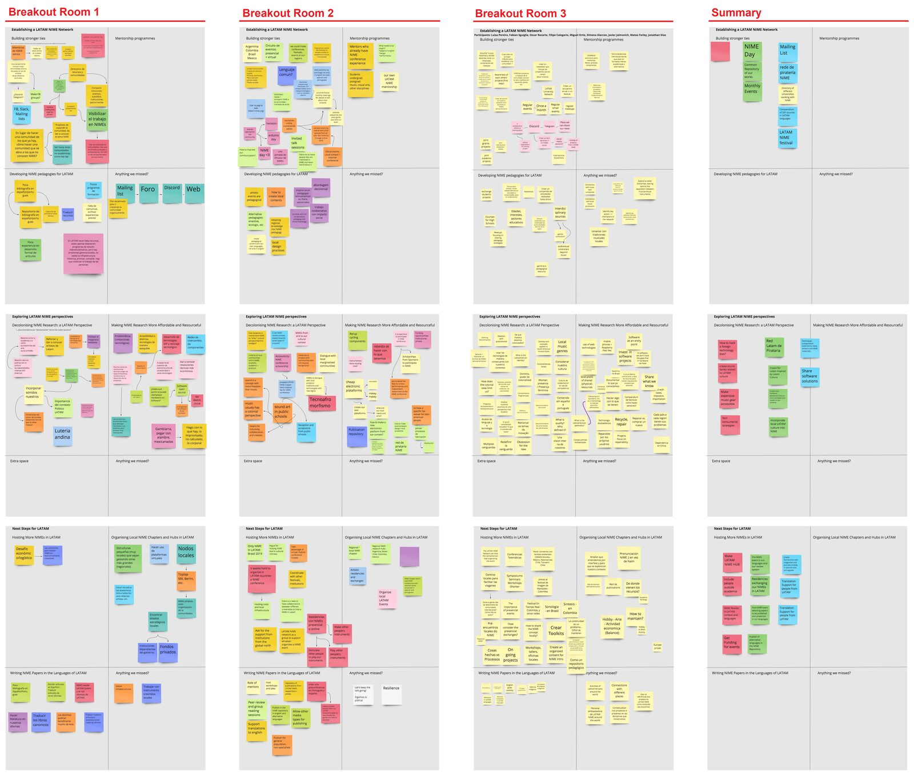
Full Miro board (click on image to enlarge).
Workshop Results
We now present a series of emerging themes under three main categories related to critical matters in the different contexts of practitioners in the LATAM community, namely, the (1) Socio-political and Economic, the (2) Communitary, and the (3) Epistemological.
Socio-political and Economic Context
As previously described, LATAM faces specific socio-economic challenges that impact NIME-related practices and projects, particularly when costly materials, technologies, access to conferences and specialised facilities are generally involved in the process. During the workshop participants reflected on these challenges and how they overcome and re-signify them with resourcefulness. Difficulties to access the NIME conference were also addressed.
Technological Innovation & Disobedience. In relation to technological innovation, (P1.3)2 noted that “there is an obsession with the ‘new’, and ‘leading edge’ technology in this area [NIME]” and that “it is important to re-define what that means for LATAM”. (P6.1) also pointed out that “those who study abroad have access to more up to date infrastructures”, and that “in LATAM we lack the resources”, whilst (P7.3) said that “in LATAM the access to components is a critical issue” and that “the Global North is perceived as a place with easy access to technology”. Along these lines, (P5.3) reported on these difficulties manufacturing simple MIDI controllers in Brazil, and had an opposite experience during his time in Canada where the components were much more accessible3.
Adding to (P5.3)’s latter point, (P1.2) commented that: “The import taxes imposed by Mercosur4 and the delivery costs to Brazil are absurd”. (P7.3) also pointed out that “DIY culture and ‘technological disobedience’ are important, and that fixing broken devices is commonplace in LATAM”. In turn, (P2.3) reiterated the importance of this “reaction culture, which can be supported by manuals and compendiums”. In contrast, (P7.1) noted that “the ‘gambiarra’5 approach [34] [41] is not always by choice, but rather the only option available”.
Resourcefulness & Re-signification. The very possibility of making electronic music in a context where the equipment is not accessible was questioned by (P3.1)6. On the other hand, (P7.1) pointed out how creativity doesn't depend necessarily on the available materials7, and (P8.1) pointed out how these limitations can sometimes stimulate originality. This shift in perspective through re-signification can help overcome frustration by financial issues8. For instance, (P6.2) mentioned that his practice already takes into account recycling materials and cheap sensors, which are locally available9.
Attending & hosting NIME in LATAM. Financial issues in LATAM also make it difficult for some to attend the NIME conference due to the cost of travel and fees10. During the workshop, some participants argued that “there should be different fees for LATAM and Europe, to improve participation” (P5.2), and that it would be interesting if an organised LATAM NIME network could articulate these fees with the NIME steering committee11.
Multiple participants also discussed the challenges related to hosting the NIME conference in LATAM. (P2.2) from Argentina12 and (P4.2) from Mexico13 mentioned some financial, logistical and infrastructural barriers. Some ideas related to overcoming these barriers were related to creating alliances between LATAM universities, or with the collaboration of wealthier institutions from the Global North14.
Communitary Context
Here we address the comments of participants related to communities of practice focused on NIME-related practices in LATAM, which reflect on the issues of isolated actors working independently and/or disruptively in traditional (or rigid) academic environments, as well as their visibility and representation in academia, the lack of documentation of past and present works, and reaching to non-English speaking members of their communities whilst also publishing their work internationally.
(In)visibility & Outsiders. A sentiment of isolation permeated participants’ descriptions of their practices in their work environments in LATAM. In the case of (P4.2), he reported feeling like the only “crazy one” in the “very conservative music department” where he works15. To this, (P9.2) replied:
“I think there’s a lot of young folks interested in this, even if they don’t know what NIME is. We need to make ourselves visible, I don’t think we are the only crazy ones in here” (P9.2)
(P6.1)16 and (P5.1)17 made similar remarks about further visibilising these works. Similarly, (P2.1)18, (P6.1)19, and (P3.2)20 commented how they also saw themselves as “outsiders” and that there should be more efforts related to opening up the NIME-Related research to a wider public. Moreover, (P6.1) alluded this to a lack of interdisciplinarity in LATAM’s academia21.
Representation & Citation. Participants also discussed ways of structurally visibilising the work produced by LATAM. For example, (P4.1) emphasised the importance of not only citing authors from the Global North, but also seminal authors from LATAM22. (P8.1)23 and (P5.1)24 also made remarks in these regards. (P4.1) also highlighted the importance of LATAM representation in this area of research, especially when conducting research about LATAM when abroad25.
Documentation. To the same end of citing past LATAM works, it was noted that it is crucial to also document present work. (P6.1) mentioned how in the USA the “historical infrastructure” of some communities amplifies their impact, and efforts regarding archiving and documenting LATAM works can help in the evolution of our network26. (P1.3)27 and (P3.3)28 also pointed towards this documentation issue.
Languages of LATAM. Yet another crucial point that was discussed was the translation of resources for non-English speakers, as well as having more online resources and discussing works in LATAM languages. This need was made clear regarding (P6.1)'s comment that 90% of his students did not speak English.
There were also several discussion points regarding academic papers and publishing in the NIME conference in these languages, and how it can improve access from people of LATAM29 30. In this sense, (P2.2) proposed that in the NIME repository
“a secondary version of a paper could be available in Spanish or Portuguese and that could be linked to the original paper” (P2.2).
This remark was supported by (P5.3)31, and (P9.3) suggested that, as a first step, we could only “have the abstracts in multiple languages”. (P6.3) mentioned that indigenous languages could also be included. Some participants also mentioned the importance of translating “classic books of NIME”(P6.1) or “forums like electro-music and MOD Wiggler” (P8.1). (P7.1) proposed a “LATAM NIME Reader”[42] with papers in the authors’ original languages.
Glocal Events. Proposals for building stronger ties among LATAM-based practitioners, such as local NIME hubs, chapters and broader multi-national networks were also discussed. For instance, it was noted by (P7.3) that "it is important to encourage the participation of local communities", and "expand to both academic and non-academic settings."
In this regard, (P2.3) described the difficulties in building a community by only organizing workshops32. Many events formats were proposed, such as festivals, to be more inclusive for people outside of academia and artists33, events before the NIME conference34 and also post-NIME events35, and also online or in-person residencies to stimulate the collaboration and the sharing of our instruments across LATAM and the rest of the world36. Other activities were also suggested, such as "seminars and book clubs"(P1.1), whilst (P1.2) suggested organising glocal (i.e., global & local) events37. The importance of ‘in-person’ was also emphasised by (P8.3)38, whilst (P9.1) called to attention other remarkable online community efforts39.
In contrast, concerns about isolation and disconnection with the international community were also expressed 40 41. As a possible solution, a participant proposed "we can generate a sub-branch that dialogues with global NIME but which in turn has its specificity" (P7.1).
Epistemological Context
To understand the LATAM context it is important to understand how our knowledge is structured and is related to our music and technology practices. In the workshop, there was a lot of discussion about our epistemological context. We discussed strategies to overcome coloniality by getting inspired by and contributing to our local cultural traditions, hacking and appropriating western technologies and aesthetics, and thinking about pedagogical practices that could be more appropriate to our reality.
Overcoming Coloniality. Coloniality was understood as “ways of perceiving the world that weren't originated in LATAM” (P4.3). A participant perceived that the “NIME culture is seen as centered in Europe and the Northern Hemisphere” (P9.3). Decolonisation was frequently mentioned beyond a theoretical trending42 academic concept, “from our [LATAM] context it is something that accompanies us in every step of our practice” (P3.2).
Coloniality is also present in the practice of LATAM immigrants living in the Global North. “The colonial relationship comes from technology, from where it is made, and even knowledge. When you come here (abroad), you are perpetuating that inequity” (P2.1). It was also mentioned the feeling of falling behind if you are at LATAM43. At the same time, it was mentioned the importance of having members of LATAM in the Global North, who can act as “ambassadors”, contributing with the LATAM perspective44 and opening opportunities to other Latin Americans45.
It was mentioned that a possible strategy to subvert coloniality is to “hacking the imaginary” (P9.1) of the Global North, which is usually “shiny”46, made with “leading edge”47 technologies. In our LATAM context, these aesthetics are re-signified and re-appropriated, “using concepts that aren't considered as much in the western context such as ritualistic aspects of music” (P9.1), applying “gambiarras”48 or a “embodied relationship with music”49.
Inspiration from local cultures. A common practice of subverting colonialism is about having a technological or artistic creative practice inspired by LATAM cultures. Some examples mentioned were the use of “Latin American sounds”50; “ (P5.1) finding a common ground with Andean lutherie”; in the inspiration from ancestral indigenous technologies that disappeared in the colonization process51, or from Afro-Brazilian musical traditions52, to create new digital interfaces.
LATAM Pedagogies. Referencing seminal pedagogical authors P4.2 mentioned there are rich traditions in education from LATAM, and educators like Paulo Freire (Brazil) and José Vasconcelos (México) could inspire new NIME pedagogies53. He also suggested pedagogical approaches “such as enactivism, ecological philosophy, which tries to make different relationships between people and objects” (P4.2), to break the Eurocentric pedagogies from conservatories54. An educational practice present in the work of some of the workshop participants was the inclusive intention to address underprivileged groups from marginalised communities55 and public schools through dialogic approaches and using accessible material and tools56.
Discussion
Upon sounding out a group of LATAM voices through our survey and workshop we revisit our initial concerns relating to their lack of representation in and input to NIME, by highlighting some of the underlying socio-political, economic, communitary and epistemological issues that emerged from their collective discussion. However, rather than fixating on the problems that originate from geopolitical disparities, i.e., the Global North and South divide, we focus on what the LATAM perspective brings to the fore in relation to critical matters to NIME whilst being part of it but also apart from it. Hence, we consider that the main outcomes of this reflection are: 1) Establishing a LATAM NIME Network; 2) Talking about NIME in LATAM’s languages; 3) Developing awareness of citational justice; 4) Making NIME more accessible; 5) Advocating for gender diversity.
Establishing a LATAM NIME Network
One of the main outcomes of this work is visibilizing the need for a unified and structured LATAM network of practitioners. For instance, it was notable that many of the participants reported feeling like they are doing “outsider” work in isolation, which often goes undocumented and is confined to smaller local spheres, due to an apparent lack of interdisciplinarity in their LATAM-based academic institutions. Nonetheless, much work is also conducted outside institutional contexts in the form of local workshops and festivals. For this reason, a LATAM network does not need to fit into the confines of academia or a specific academic conference, such as NIME, but rather be self-sustained by a structured community of practice (CoP) [43] effort which requires co-constructing stronger and more visible ties amongst its members. In this sense, for this community of regional communities to succeed it is crucial to create accessible archival structures in which multiple resources can be stored, facilitating the documentation of processes and their replication [44], the reporting of historical events [45], the sharing of resources and tools, and to foster an open and constructive discourse on the practices which enriches all of the CoP’s members. However, the sustainability and continuity of these socio-technical structures depend on the active mutual engagement of the members of the CoP, who contribute and structure the knowledge that is being shared, and maintain the technical infrastructure (e.g., the hosting of an online repository), in this sense, a centralised resource such as SensorWiki.org [46] can potentially become a beacon for a whole community with a joint enterprise. Furthermore, community engagement can also be reinforced by doing things together, e.g., by creating local hubs and organising glocal events that are open to the public and in which other (perhaps isolated) members of the LATAM community can join in remotely. These actions can open previously unexplored channels of communication whilst also making the work of other LATAM researchers visible.
Talking about NIME in LATAM’s languages
We should also consider that these resources also need to be presented in languages of LATAM to improve their accessibility to this knowledge, as for many (not just in LATAM) speaking English proficiently is a privilege, even if considered lingua franca. For example, entries in knowledge bases and tutorials on Pure Data, Max/MSP, SuperCollider and more recently Faust, have been translated into Spanish and Portuguese, and similar efforts are currently ongoing with the Bela platform. However, many academic publications remain untranslated, including seminal text books, as well as journal articles, and conference proceedings. In this sense, participants highlighted the importance of having multiple versions of a publication available in multiple languages, and having these linked to the original proceedings. We should also consider that although English, Portuguese and Spanish were the dominant languages in our workshop, LATAM’s indigenous languages should also be considered in these translation efforts.
Developing awareness of citational justice
Citational justice [47] is also key in the process of interrupting potential epistemicides [48] that keep the work of these communities invisible, even within its members. LATAM work must be made visible [49] as their historical development and richness can contribute to the broader NIME community in profound and pluriversal ways. In this sense, a LATAM NIME network can also be helpful in structurally visibilising the work within wider spheres by leveraging platforms to other members of the network, e.g., through representation, collaboration and dissemination. As evidenced by the survey, many LATAM researchers emigrate to other countries in the Global North to look for academic development and resources not available in their countries of origin. However, as experienced by some of the authors of this paper, there is often a feeling of disconnection from the activities happening in LATAM, where instead cooperation could be fostered for the benefit of those who are in and out of LATAM. Nevertheless, we cannot negate that although many of these community actions can be facilitated through open-source tools there are still socio-economic issues in LATAM that impose difficulties for the development of so-called new interfaces for musical expression.
Making NIME more accessible
Although the computer is a common tool used by our participants, there were also mentions of notable strategies developed by local practitioners in order to maximise their efforts to overcome financial issues, akin to technological disobedience [50], such as the gambiarra approach [34][41], as well as reusing, and recycling materials. Given the economic circumstances of the broader region, we can see how such resourceful approaches emerge due to necessity and not necessarily by choice. Nonetheless, some participants reported embracing these limitations as stimuli for originality. Furthermore, as pointed out by participants, NIME research is perceived as favouring “new”, “shiny” and “leading edge” technologies. This particular exigency is not only problematic to those who lack the access to said technologies, but to the NIME discourse in general, which occasionally discounts longitudinal and sustained practices with “old” DMIs [51]. However, these approaches also visualise how material and cultural issues are addressed through ingenuity and experimentation (ibid). Participants also proposed strategies to overcome these limitations, like recurring to local strategic allies or sharing and exchanging resources between members of the community. Broadly speaking, these actions demonstrate a form of resistance towards Eurocentric influences over local/regional aesthetics or research directives. One participant deemed such actions as “hacking the aesthetic imaginary” that is imbued in the Global North technologies that we employ in our practices, in allusion to their re-signification. Likewise, McPherson and Tahiroglu note that technologies (e.g., computer music languages) exert their aesthetic influence on musical (and arguably artistic) outcomes [52]. The re-appropriation of technology through reuse and recycling of materials was also considered an act of resistance towards consumerist trends often found within the larger music technology field. Nonetheless, the question still stands on whether certain music subcultures prevail due to presumably easier financial access to particular music technologies (e.g., modular synthesis). Lastly, actions like hybrid NIME conferences and having different registration rates for economically-developing countries as proposed in CHI 202157, can also facilitate access to the NIME conference. However, physically organising and hosting a NIME conference in LATAM is still challenging, due to financial, logistical and infrastructural reasons, according to participants.
Advocating for gender diversity
The effort to understand and strengthen communities of LATAM NIME practitioners must also take into account the lack of gender diversity that we found through our survey, in which 87% of the respondents identified as male. How can we create a NIME-related CoP which is more inclusive to women [53] and non-binary people? We can learn plenty from the amount of activity done at the local level to counter such inequalities and underrepresentation. There is much work being conducted outside institutional contexts by Latin American Women in the form of local collectives, workshops, and festivals oriented towards addressing such issues, such as Festival en Tiempo Real, led by Ana Maria Romano in Colombia; the collective Sonora Musicas e Feminisms, in Brasil; Híbridas Quimeras, and Laboratorio de Artes Biomiméticas led by Susan Campos Fonseca in Costa Rica; CataratadeCablesPlug led by Analía Bazán and the Red Multisonora in Argentina; and the latest list of women and LGBTQ+ identified creators GEXLAT: Género Experimentación Latinoamérica. These works bring visibility, diversity and representation in the making of music with the use of technologies, and widen creative knowledge, but are not necessarily identified as NIME-related work, though some of these initiatives and their leaders have contributed to the NIME proceedings.
Final Remarks
It is also important to acknowledge that the NIME conference is not the Olympics of novel instrument design. Therefore, presence and participation in the conference should not be sought as a goal for those not involved in academia. What this LATAM network aims to do is to reach out to the wider community of practice where researchers can learn from non-academic practitioners whilst making all research findings accessible to those outside academia—akin to a recently proposed outward looking NIME [54]. This way, those who are active in research culture and willing to publish in international conferences, can relate to and cite existing practices whilst bringing important methodological research advancement to those outside academia. This LATAM network needs to respond to the region’s needs and document its efforts, potentially setting an example for other disenfranchised communities. However, the network should be also cautious not to fall into a LATAM-centric discourse, potentially excluding itself from the overall NIME discourse or others who are not originally from LATAM who would like to be involved in cooperation and allyship with this community.
Conclusion
Results from conducted research activities shed light on the complex perspective of LATAM practitioners, artists, and researchers. These outcomes raise the question, what does NIME mean in a LATAM context? In this paper, we have reported on the efforts of a group of LATAM researchers to discuss and address the socio-political, economic, communitary and epistemological reasons underlying potential disparities of input from this community to NIME, by exploring these issues with its members through a survey and a workshop. Collected data was coded into themes that revealed opportunities for a LATAM NIME network and also to contribute a pluriversal view on existing critical NIME issues.
Acknowledgements
The authors would like to thank their respective funding bodies: Juan Ramos is supported by CONICET (Argentina), Teodoro Dannemann is supported by the National Agency for Research and Development (ANID) / Scholarship Program/ DOCTORADO BECAS CHILE/2019 - 72200493 and the EPSRC and AHRC Centre for Doctoral Training in Media and Arts Technology (EP/L01632X/1), and Juan Martinez is supported by Horizon: Trusted Data-Driven Products (EP/T022493/1) and the EPSRC Centre for Doctoral Training in Horizon: Creating Our Lives in Data (EP/S023305/1). The authors would also like to thank the survey respondents and workshop participants for their contributions to our research. We also thank SBCM for hosting our workshop free of cost, and PubPub’s technical support for restoring our paper draft in the two occasions that it crashed.
Ethics Statement
This research project and its data collection instruments were reviewed and approved by an ethics committee from the Autonomous University of Baja California (UABC). Data was collected solely for academic purposes, with informed consent from participants and it was anonymised. Demographic and geographical data was presented for purely demonstrative purposes and does not compromise the data privacy of participants, to the best of our knowledge and intent.
Footnotes
As described by Wong-Villacres et al. (2021) “a world where many contradicting worlds coexist, learning from each other without one claiming validity over the other”, referencing Arturo Escobar’s “Designs for the Pluriverse: Radical Interdependence, Autonomy, and the Making of Worlds” (2018). See references [11] and [12].
↩To anonymize the names of the workshop participants we refered to them with these codes (PX.Y), where X is a random number assigned uniquely to each participant and Y the number of the Zoom conference breakout room he or she participated.
↩“It was more expensive to use locally available components than using components imported from China. You have to consider costs and timing. In Canada, it was extremely fast, components were available overnight. It's not competitive. You can test ideas much faster. Sometimes these differences and constraints stimulate creativity.” (P5.3)
↩Mercosur/Mercosul/Ñemby Ñemuha is a South American trade bloc in which Argentina, Brazil, Paraguay, and Uruguay are full members and Bolivia, Chile, Colombia, Ecuador, Guyana, Peru and Suriname are associate countries, and Mexico and New Zealand are observer states.
↩A popular Brazilian term that describes "an improvised and informal way of solving an everyday problem when needed tools or resources are not available” Giuliano Obici in Gambioluthiery: Revisiting the Musical Instrument from a Bricolage Perspective
↩“I always think that, most of the time, things get done because of the availability of resources. For example, electronic music depends a lot on having the equipment, whether it's the MIDI controller or the super boutique analogue synthesizer. I wonder if it is possible to learn or spread the culture of such expensive instruments in countries that may not have the resources.” (P3.1)
↩“I think creativity should dispense with the quantity and access to materials one can financially afford. We shouldn’t think that one can make better things based on their income” (P7.1)
↩“Making things with what’s available often makes you have very different but interesting results, which is good. I realised it was a tool to keep going and I stopped getting frustrated by financial issues” (P8.1)
↩"I work with it children producing their instruments and composing their music from the instruments created with scrap materials." (P6.2)
↩“I haven’t submitted anything to NIME in recent years due to the cost of the fee — they are at European rates, paid for European universities.” (P5.2)
↩“With a Latin American network [...] we can propose [...] a special fee for Latin Americans [...] since our reality is so different.” (P1.2)
↩“After NIME 2019 in Brazil we were inspired to host NIME in Argentina, but after conversations with the organisers—who had to cover the costs from many different sources—we thought it would be quite a challenge, specially since our university is far from the capital and there aren’t any nearby hotels in the area, and renting a place in the capital would be very expensive.” (P2.2)
↩“I’ve also wondered how we could host it in Mexico—multiple universities would need to join efforts to provide infrastructure, specially for concerts, where you need to have the proper equipment and space to do it for the needs of some of the performances presented at NIME” (P4.2)
↩“I believe that there should be alliances between perhaps wealthier institutions, that could be from the global north, as part of reparations as well. If we want to talk about decolonization in NIME, it also be carried out in that way, so perhaps a kind of alliances should be formed between larger universities to support the realization of a NIME conference in Latin America.” (P3.2)
↩The music department where I work is very conservative. I am the only crazy one there. The students are very interested however, with exhibitions that my colleagues in the arts department, who present a gallery exhibition, I put up a piece that gets a lot of attention, people ask me, you're working with what? What are you doing? (P4.2)
↩“It’s not that the work doesn’t exist, we just don’t know how to communicate it. There is a lot of forgotten people in our countries [LATAM] doing these things.” (P6.1)
↩“COVID’s forced virtuality has helped to have less regional and more inter-institutional exchanges. Particular artists are well-known, but communities lack visibility. That’s why a LATAM network would be great.” (P5.1)
↩“In some places of LATAM this is relatively new and there’s only a few ‘outsiders’ doing this from their discipline, e.g., the engineer working in the arts. How can we open up this circle in LATAM for those who don’t know this exists?” (P2.1)
↩“Students sometime find their vocation when they are assigned to build a DMI as coursework, only then they start looking up resources and similar works online and in social media.” (P6.1)
↩“How could we visibilise NIME research in LATAM? Part of decolonising this research is to reach other publics and other people. Making research more accessible.” (P3.2)
↩“I left Mexico when I couldn’t find any interdisciplinary programmes. I think those currently in charge of decision making were not educated with these novel pedagogical paradigms”(P6.1)
↩“I usually point my students towards Schafer when talking about the beginnings of sonic art, but I’m sure there’s someone from LATAM I could also be referencing” (P4.1)
↩“I think students are also responsible for citing the works. I recently started citing more LATAM and Argentinian references.” (P8.1)
↩“In my undergrads we only analysed the works of European electroacoustic composers. I think is important to begin looking for what is being done by LATAM artists in the electronic and sonic arts, because many things were happening in tandem with Europe but we did not look at that in school.” (P5.1)
↩“I couldn’t find a supervisor that wanted to work on the sounds of the Guatemalan civil war when I had the opportunity to do a PhD in Cambridge. Nowadays there’s more LATAM leaders directing research centres abroad who can help us orient research towards non-western perspectives.” (P4.1)
↩“When going abroad, for example to the USA, you realise communities aren’t as huge as you would think but they at least have a historical infrastructure. The problem we have in LATAM is that we are not historically archiving, compiling or documenting our works” (P6.1)
↩“A recurrent issue is not giving continuity to work and not generating archives. There’s a lot of activity but it is lost in between generations” (P1.3)
↩“We need to discuss how projects are achieved, which is something that requires ingenuity and mounting solutions that are important to share” (P3.3)
↩“publishing in Spanish is important for expanding the access [to NIME]” (P4.3)
↩“I would like a lot of people to find about what is happening [in NIME], and doing so in the language I speak is important.” (P3.2)
↩“we could have mirrors links to the [NIME] proceedings in other languages” (P5.3)
↩“I do workshops almost every year in Mexico, but a local community has not yet emerged and there is no continuity of this effort.” (P2.3)
↩“Thinking of going out or expanding beyond the academy, bring an event linked to artistic production, in the form of a Festival, that seeks a rotation among cities and regions strategically planned to have access to people outside the academy” (P8.2)
↩“What if we create a NIME pre-conference to submit in our original languages? If we do a peer review exchange between us that already improves the quality of the papers we do. And then we can also help those who are not fluent in English in translating.” (P1.2)
↩“if we organise a chapter and create an event like NIME Latin America, we can ask some of the authors to make a Spanish and Portuguese version as well, we can organise a translation system which is also now super easy to translate with online tools. [...] select some of the papers presented at the [International NIME] conference, and ask them to present for a local community.” (P1.2)
↩The idea of residencies with NIMEs, to encourage local artists to exchange the instruments they create. [...] I'm organizing an online residency with other people where I send the instrument to their house, we talk to each other through the internet. [...] it's more difficult online but it works. And that of sending your instrument by post to another person who experiments, creates a performance, presents it in their region or online, it happens for another person who experiments with the instrument. [...] And so creating residencies amongst ourselves or taking instruments that are made all over the world, and having people here play them, and create techniques and traditions... it's something that we can organise. (P1.2)
↩"We can do glocal events in LATAM where I gather with three people in Brazil but I can also invite someone from Mexico or Argentina to join us remotely.” (P1.2)
↩"Online environments are being fetishised, I think presence is important in LATAM to make stronger ties” (P8.3)
↩"For example, TopLap Mexico decides which platforms they use to communicate. The possibility is opened for people to upload performances, tutorials, research, workshops in single website." (P9.1)
↩"Local branches can fragment the community" (P2.3)
↩"You have to think very well how these nodes contribute to the global community, rather than isolate ourselves and generate new regionalisms." (P6.1)
↩"Decolonization is trendy, but it has been in our context forever." (P3.2)
↩"You feel like you fall behind a lot if you work at LATAM. [...] This may be part of colonization." (P6.3)
↩"As people who know the idiosyncrasies of LATAM [living abroad], they can be ambassadors and give the EU visions the LATAM perspective, complementing the different ways of thinking." (P7.3)
↩"Now we are already seeing more doctors who are running research centers [abroad] who are Latino, and that can help us a lot to use the resources but in the direction, we want to go and not just the Western way." (P6.1)
↩"NIME's aesthetics are very shiny. It's different from the aesthetics of LATAM or of India. If we look at the resources, a lot of times it's fragile (electricity goes out)." (P6.3)
↩“About innovation, in this area, there is an obsession with the new, the latest cutting edge technology. He would like to see less fixation on the ‘leading edge’ and more on the ‘healing core’.”(P1.3)
↩"The colonial relationship comes from technology, from where it is made, and even knowledge. When you come here (abroad), you are perpetuating that inequity. What I understood from that paper (Gambiarra) is how to re-appropriate technology. How to explore new forms of recycling” (P2.1)
↩“I make with what is around, the improvised, not calculated, not algorithmic, the corporeal. I think, because there is talk today of the decolonial and not at other times. I think LATAM can bring a lot of richness to the corporeal.” (P2.1)
↩“Part of the de-colonization is to incorporate our sounds. In all our countries there are sounds of our cities, ethnicities.” (P4.1)
↩“If we look at the work of Patricia Cadavid who uses indigenous coding systems. In the process of colonization this system disappeared. Part of her work helps to recover the memory of these peoples.” (P6.3)
↩“I sought a dialogue of Brazilian music, especially Afro-Brazilian music, in the context of capoeira, or [...] of Maracatu, [...], to seek dialogue and there to seek a new creation. [...] Something that brings and above all thinks and has this perspective and intention of dealing with epistemologies and technologies of our tradition that were excluded, in full dialogue to build something from this dialogue and this in practice.” (P8.2)
↩"In Latin America we have very rich traditions in education. In Brazil we have (Paulo) Freire, in Mexico we have (José) Vasconcelos for whom the purpose of education is to free us from these colonial dynamics" (P4.2)
↩“A suggestion that coincides with Isabela's work is to adopt different pedagogies with collaborative work, work that involves different philosophies, such as enactivity, ecological philosophy, which tries to make different relationships between people and objects. That is why it breaks with the dynamics of the conservatory, the teacher tells you what to do and how to do it and if you don't do it, it's wrong, if you do it well, it's right. It is more open, more exploratory, more of personal knowledge and knowledge of others.” (P4.2)
↩"I did a project that has an artistic part and an educational part that seeks, in a more extended way, to take this to the communities. In this process, I have been studying for two years the development of what was my dissertation, by the way, Paulo Freire is a valuable asset in this sense, of the dialogue bringing something beyond, and the dialogue with the community here in Latin America, especially those who have been excluded regarding decoloniality, about these non-visible epistemologies." (P8.2)
↩“My master's thesis was to take sound art to public schools in the countryside region of São Paulo and sound art as a concept that aggregates more people than just music. Music alone has a tendency for people to hierarchize things by the Eurocentric point of view”. (P6.2)
↩- ↩
Citations
- ↩Alvarado Garcia, A., Badillo-Urquiola, K., Barrera Machuca, M.D., et al. 2020. Fostering HCI Research in, by, and for Latin America. Extended Abstracts of the 2020 CHI Conference on Human Factors in Computing Systems, 1–4.
- ↩Wong-Villacres, M., Garcia, A.A., Badillo-Urquiola, K., et al. 2021. Lessons from Latin America: Embracing Horizontality to Reconstruct HCI as a Pluriverse. Interactions 28, 2, 56–63.
- ↩Moya, J. 2018. Migration and the historical formation of Latin America in a global perspective. Sociologias 20, 24–68.
- ↩Wong-Villacres, M., Alvarado Garcia, A., and Tibau, J. 2020. Reflections from the classroom and beyond: Imagining a decolonized hci education. Extended Abstracts of the 2020 CHI Conference on Human Factors in Computing Systems, 1–14.
- ↩Tragtenberg, J., Albuquerque, G., and Calegario, F. 2021. Gambiarra and Techno-Vernacular Creativity in NIME Research. International Conference on New Interfaces for Musical Expression, PubPub.
- ↩Rivera Cusicanqui, S. 2010. Ch’ixinakax utxiwa. Una reflexión sobre prácticas y discursos descolonizadores. Tinta limon.
- ↩Lerner, M.M. 2019. Latin American NIMEs: Electronic Musical Instruments and Experimental Sound Devices in the Twentieth Century. NIME, 228–233.
- ↩Loureiro, M. 2019. The First Brazilian Symposium on Computer Music presents Brazilian computer music potentials - Caxambu, MG, 1994. Anais do XVII Simpósio Brasileiro de Computação Musical, SBC, 243–247.
- ↩Avila, J.P.M., Greenhalgh, C., Hazzard, A., Benford, S., and Chamberlain, A. 2019. Encumbered interaction: A study of musicians preparing to perform. Proceedings of the 2019 CHI Conference on Human Factors in Computing Systems, 1–13.
Calegario, F., Wanderley, M., Tragtenberg, J,, et al. 2020. Probatio 1.0: collaborative development of a toolkit for functional DMI prototypes. Proceedings of the international conference on New Interfaces for Musical Expression, 21–25.
↩- ↩Calegario, F., Wanderley, M.M., Huot, S., Cabral, G., and Ramalho, G. 2017. A method and toolkit for digital musical instruments: generating ideas and prototypes. IEEE MultiMedia 24, 1, 63–71.
- ↩Lerner, M.M. 2017. Osiris: a liquid based digital musical instrument. NIME, 52–55.
- ↩Pardue, L., Ortiz, M., Van Walstijn, M., Stapleton, P., and Rodger, M. 2020. Vodhrán: collaborative design for evolving a physical model and interface into a proto-instrument. Proc. NIME 2020.
- ↩Ramos, J.M. 2019. Eolos: a wireless MIDI wind controller. NIME, 303–306.
- ↩Rodger, M., Stapleton, P., Van Walstijn, M., Ortiz, M., and Pardue, L. 2020. What makes a good musical instrument? a matter of processes, ecologies and specificities. Proceedings of the international conference on New Interfaces for Musical Expression, 405–410.
- ↩Dannemann, T. and Barthet, M. 2021. SonicDraw: a web-based tool for sketching sounds and drawings. Proceedings of the 2021 International Computer Music Conference.
Dannemann, T. 2019. Luthiers del Siglo XXI. Available at https://luthiersxxi.home.blog/.
↩- ↩Lucas, A.M., Ortiz, M., and Schroeder, F. 2019. Bespoke Design for Inclusive Music: The Challenges of Evaluation. NIME, 105–109.
Ortiz, M.A., Knapp, R.B., and Alcorn, M. 2007. Dı́amair: Composing for choir and integral music controller. In Proceedings of the 7th International Conference on New Interfaces for Musical Expression, NIME ’07, page 289–292, New York, NY, USA, 2007. Association for Computing Machinery.
↩- ↩Jaimovich, J. and Morand, F. 2019. Shaping the biology of emotion: Emovere, an interactive performance. International Journal of Performance Arts and Digital Media 15, 1, 35–52.
- ↩Dı́az, X.A. 2019. Conceptual design for INTIMAL: a physical/virtual embodied system for Relational Listening. The Journal of Somaesthetics 4, 2.
- ↩Avila, J.M., Tsaknaki, V., Karpashevich, P., et al. 2020. Soma design for NIME. Proceedings of the 2020 International Conference on New Interfaces for Musical Expression (NIME’20).
- ↩Corintha, I., Cabral, G., and Bernardes, G. 2019. AMIGO: an assistive musical instrument to engage, learn and create music. Proceedings of the international conference on New Interfaces for Musical Expression.
- ↩Corintha, I. and Cabral, G. 2021. Improvised Sound-Making within Musical Apprenticeship and Enactivism: An Intersection between the 4Es Model and DMIs. NIME 2021, PubPub.
Marquez-Borbon, A. and Martinez Avila, J.P. 2018. The problem of DMI adoption and longevity: Envisioning a NIME performance pedagogy. In Proceedings of the International Conference on New Interfaces for Musical Expression, pages 190–195. Zenodo.
↩- ↩Marquez-Borbon, A. 2020. Collaborative Learning with Interactive Music Systems. Proceedings of the International Conference on New Interfaces for Musical Expression, 581–586.
- ↩Alarcón Dı́az, X., Gonzalez Sanchez, V.E., and Erdem, C. 2019. INTIMAL: Walking to feel place, breathing to feel presence. Proceedings of the International Conference on New Interfaces for Musical Expression.
- ↩Alarcon Diaz, X., Boddie, P., Erdem, C., et al. 2019. Sensing Place and Presence in an INTIMAL Long-Distance Improvisation. Journal of Network Music and Arts 1, 1, 3.
Barbosa, J., Calegario, F., Tragtenberg, J., Cabral, G., Ramalho, G.L., and Wanderley, M.M. 2015. Designing DMIs for popular music in the Brazilian northeast: lessons learned. NIME, 277–280.
↩Juan Mariano Ramos. Bandoneon 2.0: desarrollo del prototipo de Bandoneón Electrónico ALFA. In UFSCar, editor, Anais das XXVII Jornadas de Jovens Pesquisadores. A Ciência e a Tecnologia na Produção de Inovação e Transformacão Social., São Carlos, Brazil, October 2019. UFSCar
↩Laddy Patricia Cadavid Hinojosa. Electronic _khipu_: Thinking in experimental sound from an ancestral Andean interface. Computer Music Journal, 44(2-3):39–54. 07, 2021.
↩Laddy P Cadavid. Knotting the memory//encoding the khipu_: Reuse of an ancient Andean device as a NIME. In Romain Michon and Franziska Schroeder, Editors, Proceedings of the International Conference on New Interfaces for Musical Expression, pages 495–498, Birmingham, UK, Jul 2020. Birmingham City University.
↩Tragtenberg, J., Calegario, F., Cabral, G., and Ramalho, G. 2019. TumTá and Pisada: Two Foot-controlled Digital Dance and Music Instruments Inspired by Popular Brazillian Traditions. Anais do XVII Simpósio Brasileiro de Computação Musical, 76–83.
↩- ↩Tragtenberg, J., Albuquerque, G., and Calegario, F. 2021. Gambiarra and Techno-Vernacular Creativity in NIME Research. Proceedings of the International Conference on New Interfaces for Musical Expression.
- ↩Fasciani, S. and Goode, J. 2021. 20 NIMEs: Twenty Years of New Interfaces for Musical Expression. International Conference on New Interfaces for Musical Expression, PubPub.
- ↩Hayes, L. and Marquez-Borbon, A. 2020. Nuanced and Interrelated Mediations and Exigencies (NIME): Addressing the Prevailing Political and Epistemological Crises. Proceedings of the International Conference on New Interfaces for Musical Expression, Birmingham City University, 428–433.
- ↩Avila, J., Tragtenberg, J., Calegario, F., et al. 2021. Towards a Latin American NIME Research Community. Anais do XVIII Simpósio Brasileiro de Computação Musical, SBC, 298–301.
- ↩Escobar, A. Designs for the pluriverse: Radical interdependence, autonomy, and the making of worlds. .
- ↩Wong-Villacres, M., Garcia, A.A., Badillo-Urquiola, K., et al. 2021. Lessons from Latin America: embracing horizontality to reconstruct HCI as a pluriverse. interactions 28, 2, 56–63.
Saldaña, Johnny. 2021. The coding manual for qualitative researchers. Sage.
↩- ↩Tragtenberg, J., Albuquerque, G., and Calegario, F. 2021. Gambiarra and Techno-Vernacular Creativity in NIME Research. Proceedings of the International Conference on New Interfaces for Musical Expression.
- ↩Obici, G. 2017. Gambioluthiery: Revisiting the Musical Instrument from a Bricolage Perspective. Leonardo Music Journal 27, 87–92.
- ↩Jensenius, A.R. and Lyons, M.J. 2017. A nime reader: Fifteen years of new interfaces for musical expression. Springer.
- ↩Lave, J. and Wenger, E. 1991. Situated learning: Legitimate peripheral participation. Cambridge university press.
- ↩Calegario, F., Tragtenberg, J., Frisson, C., et al. 2021. Documentation and Replicability in the NIME Community. Proceedings of the International Conference on New Interfaces for Musical Expression.
- ↩Bin, S.M.A. 2021. Discourse is critical: Towards a collaborative NIME history. Proceedings of the International Conference on New Interfaces for Musical Expression.
- ↩Wanderley, M.M., Birnbaum, D., Malloch, J., Sinyor, E., and Boissinot, J. 2006. SensorWiki.org: A Collaborative Resource for Researchers and Interface Designers. Proceedings of the International Conference on New Interfaces for Musical Expression, 180–183.
- ↩Kumar, N. and Karusala, N. 2021. Braving Citational Justice in Human-Computer Interaction. In: Extended Abstracts of the 2021 CHI Conference on Human Factors in Computing Systems. Association for Computing Machinery, New York, NY, USA.
- ↩Patin, B., Sebastian, M., Yeon, J., Bertolini, D., and Grimm, A. 2021. Interrupting Epistemicide: A Practical Framework for Naming, Identifying, and Ending Epistemic Injustice in the Information Professions. J. Assoc. Inf. Sci. Technol. 72, 10, 1306–1318.
- ↩Lerner, M.M. 2019. Latin American NIMEs: Electronic Musical Instruments and Experimental Sound Devices in the Twentieth Century. Proceedings of the International Conference on New Interfaces for Musical Expression, UFRGS, 228–233.
- ↩Oroza, E. 2012. Desobediencia Tecnológica. De la revolución al revolico. http://www.ernestooroza.com/desobediencia-tecnologica-de-la-revolucion-al-revolico/.
- ↩Tragtenberg, J., Albuquerque, G., and Calegario, F. 2021. Gambiarra and Techno-Vernacular Creativity in NIME Research. Proceedings of the International Conference on New Interfaces for Musical Expression.
- ↩Obici, G. 2017. Gambioluthiery: Revisiting the Musical Instrument from a Bricolage Perspective. Leonardo Music Journal 27, 87–92.
- ↩Hayes, L. and Marquez-Borbon, A. 2020. Addressing NIME’s Prevailing Sociotechnical, Political, and Epistemological Exigencies. Computer Music Journal 44, 2–3, 24–38.
- ↩McPherson, A. and Tahıroğlu, K. 2020. Idiomatic patterns and aesthetic influence in computer music languages. Organised Sound 25, 1, 53–63.
- ↩Xambo Sedo, A. 2018. Who are the women authors in NIME?—improving gender balance in NIME research. Proceedings of the International Conference on New Interfaces for Musical Expression, Virginia Tech Blacksburg, VA.
- ↩Morreale, F., Bin, S.A., McPherson, A., Stapleton, P., and Wanderley, M. 2020. A NIME of the times: developing an outward-looking political agenda for this community. Proceedings of the International Conference on New Interfaces for Musical Expression, 160–165.